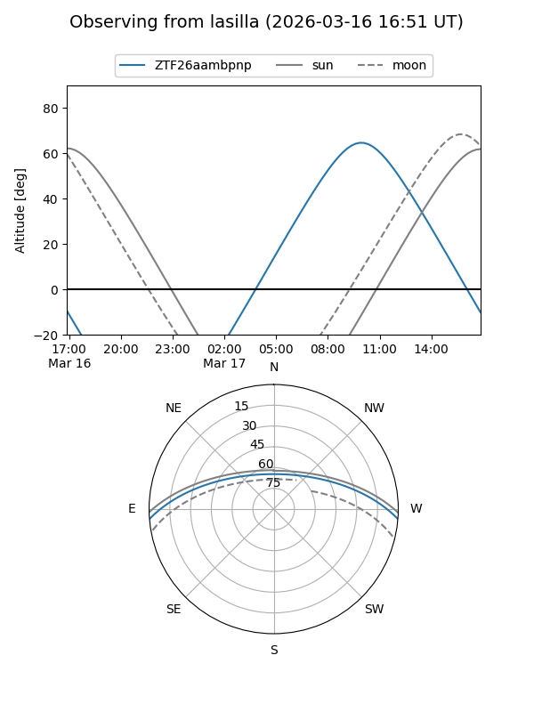
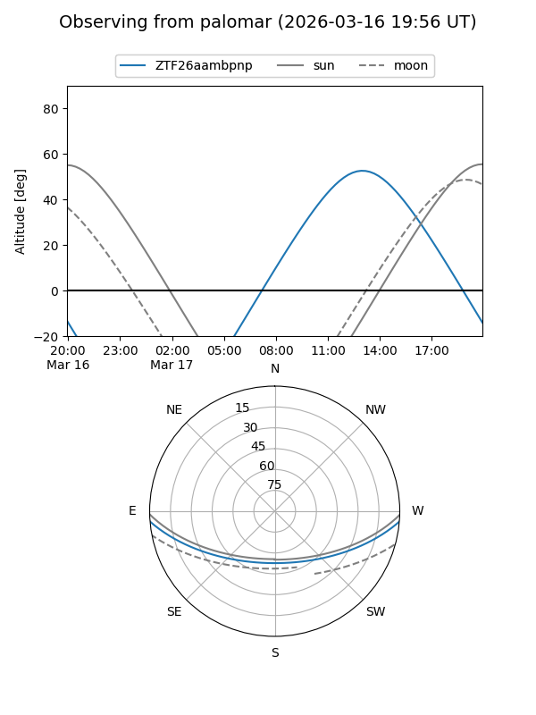

ZTF26aambpnp
Target ZTF26aambpnp at 2026-03-16 14:00
Aliases and brokers:
FINK: link
Lasair: link
ALeRCE: link
alt names
ZTF26aambpnp (ztf,fink_ztf)
Coordinates:
equatorial (ra, dec) = 252.9824,-3.93191
equatorial (HMS+DMS) = 16:51:55.76,-03:55:54.86
galactic (l, b) = (14.5396,+24.26951)
Flags:
Photometry:
last ztfg=17.00
1 ztfg detections
Lightcurve
Visibility


Additional plots